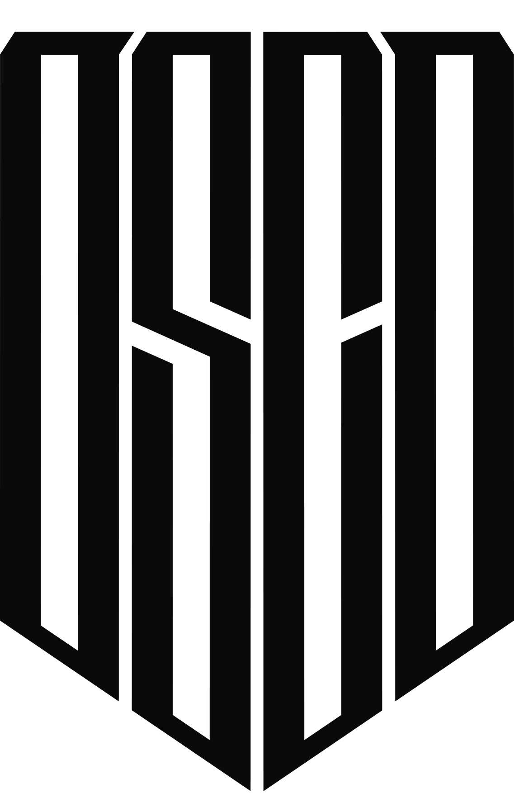

Open Security Collaborative Development
Open international initiative of computer security specialists aiming to solve common problems, share knowledge, and improve general security posture.Why
Some problems could not be solved internally by one team or an organization, but together, as a community, we can achieve a lot.When
The collaborative development is organized as two weeks-long sprints. The next sprint is planned for Spring 2020. Details will be provided on our twitter soon.Where
Most of the participants are joining remotely. Information about the possibility of joining in person will be provided together with details about the next sprint.Sprints
- OSCD Sprint #1: Threat Detection, Fall 2019- OSCD Sprint #2: Spring 2020
Previous sprint participants
- Thomas Patzke, @blubbfiction (Sigma Project) 🇩🇪- Teymur Kheirkhabarov, @HeirhabarovT (BI.ZONE SOC) 🇷🇺
- Daniel Bohannon, @danielhbohannon (FireEye) 🇺🇸
- Alexey Potapov (PT ESC) 🇷🇺
- Kirill Kiryanov (PT ESC) 🇷🇺
- Egor Podmokov (PT ESC) 🇷🇺
- Anton Kutepov (PT ESC) 🇷🇺
- Alexey Lednyov (PT ESC) 🇷🇺
- Anton Tyurin (PT ESC) 🇷🇺
- Jan Hasenbusch (BSI) 🇩🇪
- Eva Maria Anhaus (BSI) 🇩🇪
- Diego Perez, @darkquassar (Independent Researcher) 🇦🇷
- Mikhail Larin (Jet CSIRT) 🇷🇺
- Alexander Akhremchik (Jet CSIRT) 🇷🇺
- Dmitriy Lifanov (Jet CSIRT) 🇷🇺
- Alexey Balandin, @Kriks87 (Jet CSIRT) 🇷🇺
- Roman Rezvukhin (CERT-GIB) 🇷🇺
- Alina Stepchenkova (CERT-GIB) 🇷🇺
- Timur Zinniatullin (Angara technologies group) 🇷🇺
- Gleb Sukhodolskiy (Angara technologies group) 🇷🇺
- Victor Sergeev, @stvetro (Help AG) 🇦🇪
- Ilyas Ochkov, @CatSchrodinger (Independent Researcher) 🇷🇺
- James Pemberton, @4A616D6573 (Hydro Tasmania) 🇦🇺
- Denis Beyu (GKU TO CITTO) 🇷🇺
- Mateusz Wydra, @sn0w0tter (Relativity) 🇵🇱
- Jakob Weinzettl, @mrblacyk (Tieto SOC) 🇵🇱
- Tom Kern (NIL SOC) 🇸🇮
- Sergey Soldatov, @SVSoldatov (Kaspersky MDR) 🇷🇺
- Ian Davis (Tieto SOC) 🇨🇿
- Daniil Yugoslavskiy, @yugoslavskiy (Cindicator SOC) 🇷🇺
Thanks to
- hack.lu organizers for a place on conference premises during the Sprint #1- Andrey PolarLetters for the logo
Contacts
- Twitter- Slack
Organizers
We are a community of enthusiasts. Although it's not forbidden for Participants to mention a company they are currently working for, this initiative is not affiliated with any of them or any other commercial organizations.We do not mention any names in this section to not produce the feeling that somebody "owns" this initiative. All credit goes to the Participants.